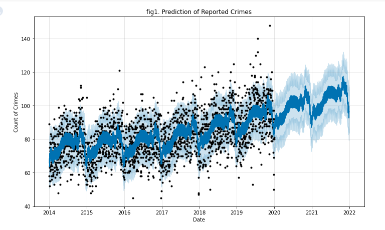
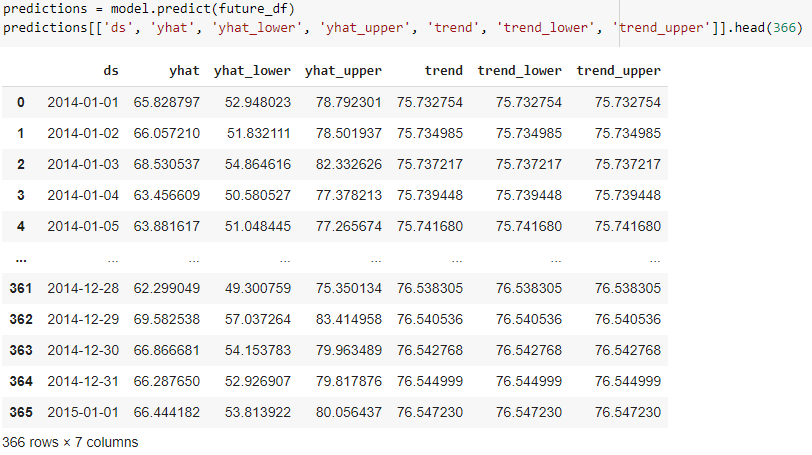
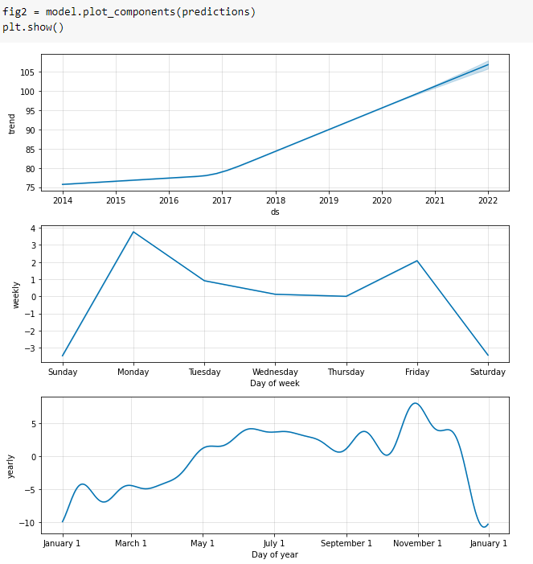
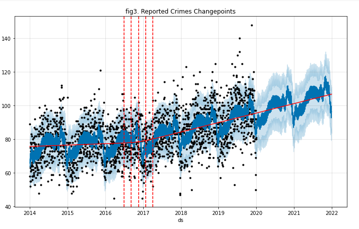
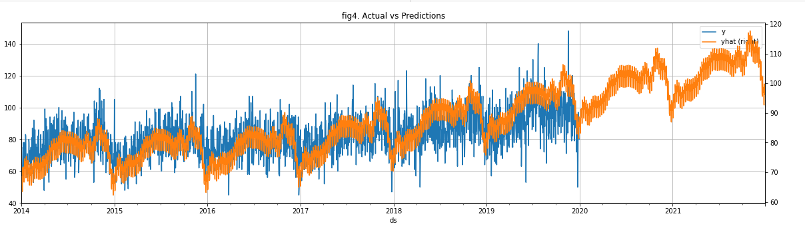

Predicting Trends

The purpose of this project is to attempt to see if there are reported crimes trends in Toronto. The dataset is extracted from the Toronto Police Services website; from 2014 to 2020. We look at daily reported crimes to see if there are any trends in the reported crimes counts. We decided to use Facebook Prophet to see if we can predict what the trend could be. First extracted the dataset as a csv than used Pyspark to cleasn the data. Data cleasing include converting the dates column to datatime format; than drop duplicate records; than lastly we group and count each daily reported crime date to creating a unique record to get columns "ds" and "y" to run Facebook Prophet. Next, the Pyspark data is converted to a Pandas Dataframe and checked for missing values. The data is than model and the following table show the future values that was charted.

From fig1. Predictions of Reported Crimes, the light blue depicted by (yhat_lower and yhat_upper) show the uncertainty range of the data while the dark blue (yhat) is the prediction range. With a few expected outliers and its lower and upper bounds we see the predicted data is close to the actual data with an upward trend. This suggest the model should be relatively accuarte pushing the predictions out to future years (2021 and 2022).
Seasonality Components

Fig2. show the different seasonality components to the daily reported crimes. The first plot further prove the upward trend of the prediction. Here we see a change in the data in 2017 from relatively flat to an increasing trend. The next plot show daily reported crimes throughout the week. Interestingly, the plot show there are more reported crimes on Mondays and Fridays; and less on weekends and relatively flat during mid week. The last plot show the seasonality during the year. Here we see an increasing trend from January to around October with a few valleys around February, September, and October; but peak around November. Interestingly, there are less reported crimes in the winter months compared to summer months.
Data Changepoints

Data changepoints is a function in Prophet that is used to indicate where the actual data changes direction from a flatter to increasing/decreasing range. Fig3. the dotted verticle lines show a flat range of reported crimes from 2014 to 2017; than begin to increase at around 2018. While the solid line show this flat to upward trend.
Comparing Trends

Lastly, we want to visualize the actual vs the predicted data and see if the model is a good fit. Fig4. show the comparison between the yearly actuals to the yearly predictions from. The chart show that the predictions orange lines are within the actual blue lines and the upward trend after 2017. This model appear to be a good fit of the data.